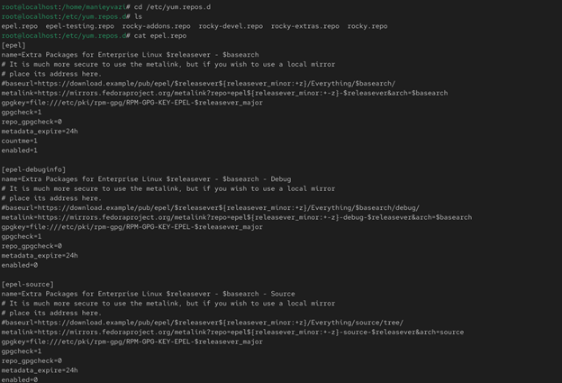
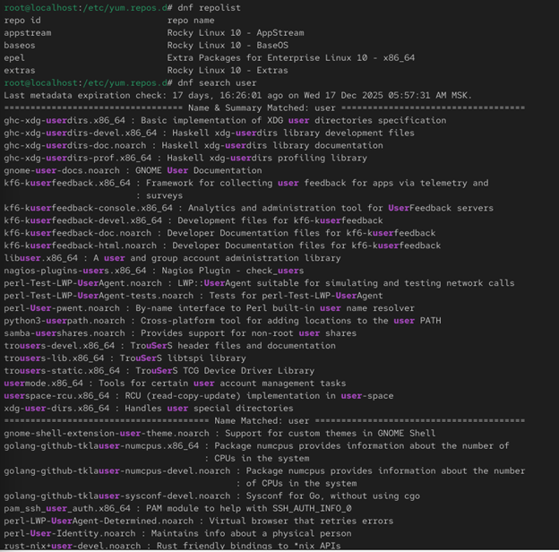
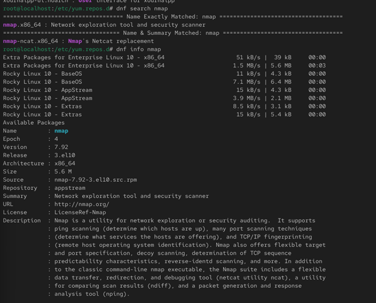
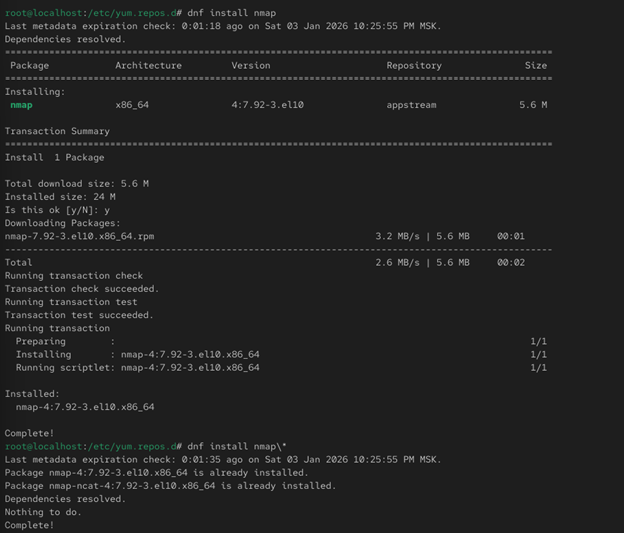
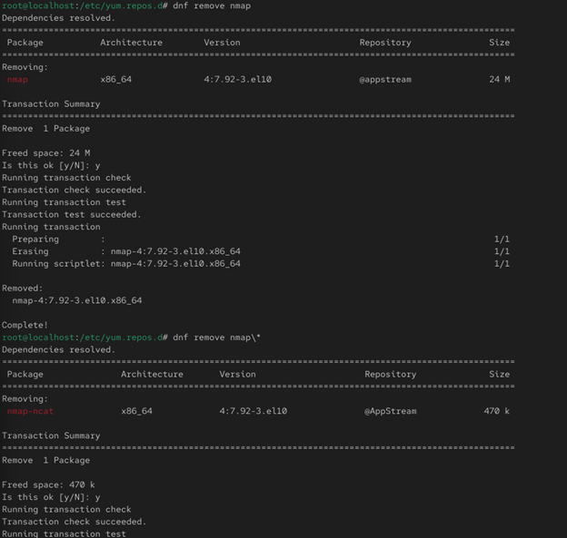
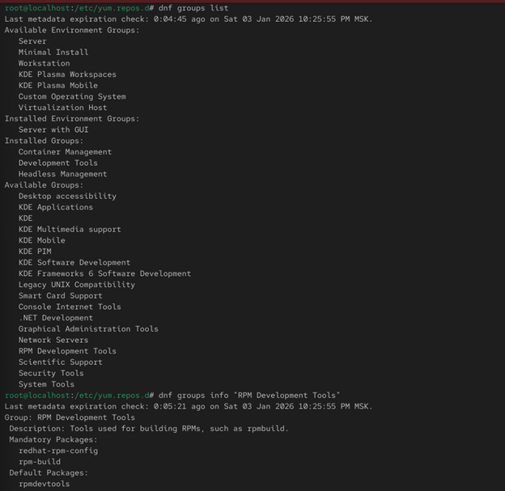
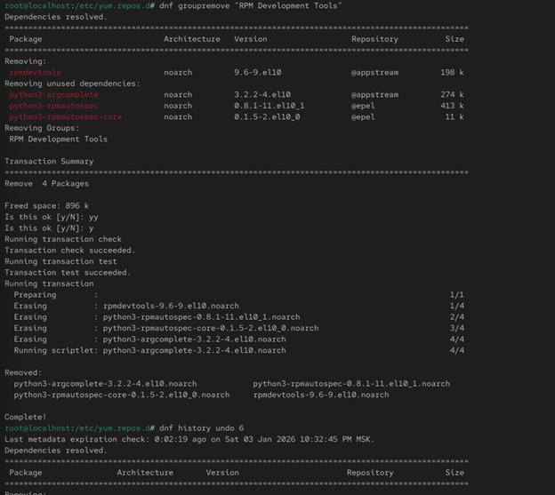
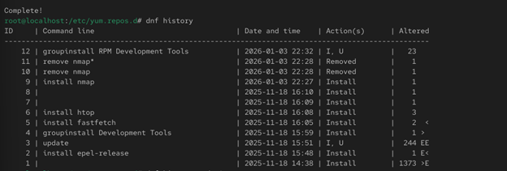
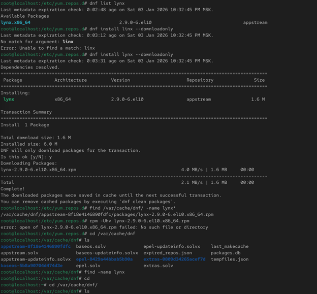
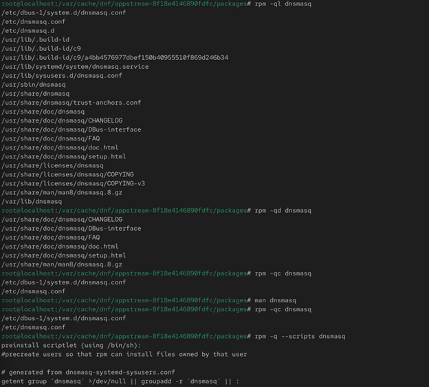

Получение навыков работы с репозиториями, пакетным менеджером dnf и утилитой rpm в Linux.

Рис. 1 — Каталог /etc/yum.repos.d и файл rocky.repo
-.

Рис. 2 — Список репозиториев

Рис. 3 — Информация о пакете nmap
-.

Рис. 4 — Установка пакета nmap
-.

Рис. 5 — Работа с группами пакетов
-.

Рис. 6 — Список групп пакетов
-.
Рис. 7 — Установка группы RPM Development Tools
-.

Рис. 8 — Удаление группы RPM Development Tools
Проверка работы системы.

Рис. 9 — История dnf и откат действия

Рис. 10 — Загрузка пакета lynx

Рис. 11 — Установка пакета lynx

Рис. 12 — Файлы пакета lynx

Рис. 13 — Документация пакета lynx

Рис. 14 — Справка man по lynx

Рис. 15 — Работа браузера lynx

Рис. 16 — Конфигурационные файлы lynx
В ходе работы были изучены основные приёмы управления пакетами в
Linux с использованием менеджеров dnf и
rpm.
Были выполнены задачи по установке, обновлению и удалению программ,
исследованию содержимого пакетов, их конфигурационных файлов,
документации и установочных скриптов.
Особое внимание уделялось различиям между установкой пакетов из
репозиториев и установкой локальных rpm-файлов.